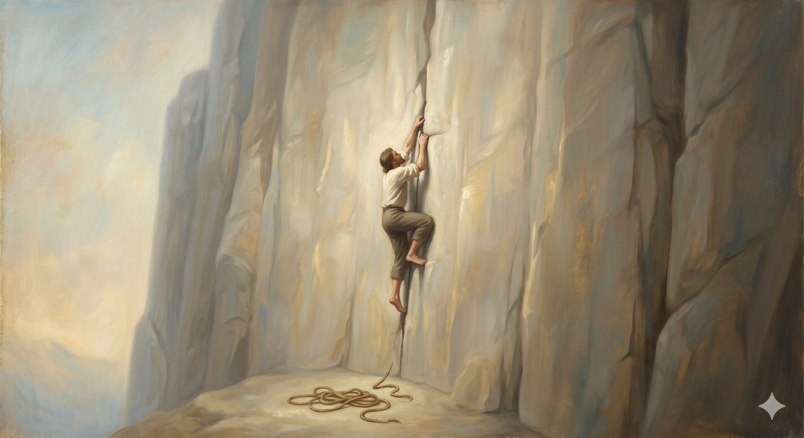

Pelagianism
Pelagianism — the flattering error that we can save ourselves by effort; its genuine alarm at moral laziness, why it misreads the fall, and its modern forms from therapeutic deism to self-help faith.
"...I do not do what I want, but I do the very thing I hate." Romans 7:15 (ESV)
The second peril is the one most likely to feel, to a modern pilgrim, not like a danger but like simple common sense — even like encouragement. It claps you on the shoulder and tells you that you have it in you, that you can be good if you really try, that the whole business of religion is mainly a matter of effort and sincerity. It is the most flattering of all the errors, and that is precisely what makes it so hard to see as a cliff.
What it claimed"You can do this if you try hard enough"
Pelagius was a British monk of real learning and genuine moral seriousness who arrived in Rome around 380 and was appalled by what he saw: comfortable Christians using grace as an excuse for laziness. He taught that human beings have the natural capacity to choose good and obey God without needing divine grace to enable the choice. Grace helps — it clarifies the path, and Christ provides a fine example — but it is not strictly necessary for righteous living. Adam's sin, on this view, harmed Adam; it did not fundamentally corrupt human nature. We are born into a world where sin is common, but we are not ourselves damaged at the root.
The real question it was trying to answerA genuine concern about moral laziness
Once again, the instinct beneath the error is not worthless. Pelagius was watching real Roman Christians treat "I'm saved by grace, not works" as a license for moral disengagement, and his pastoral alarm was right: a grace that produces no change is a counterfeit grace. He was also pressing a fair question about human agency — if we have no real capacity to choose, how can God hold us responsible? Augustine, his great opponent, recognized that Pelagius was answering a real problem. The trouble is that he answered it with a solution that cut the nerve of the gospel.
In plain terms
Pelagianism is the belief that, deep down, we can save ourselves — that we just need to try harder, and grace is a helpful boost rather than a rescue. It's attractive because it flatters us. It's deadly because, if it's true, the cross was a tutorial, not a rescue.
Where it went wrongIt misreads how deep the fall goes
The whole weight of Paul's argument in Romans is that the human will is not a neutral faculty that merely needs better information — it is bound, complicit in its own captivity. I do not do what I want, but I do the very thing I hate. If grace is merely assistance offered to an already-capable agent, then the cross is not a rescue but a coaching session, and the Spirit's prior work of drawing us — the grace that precedes any movement of ours toward God — becomes redundant. The peril of this teaching is that it leaves you, finally, alone with your own willpower on a slope no willpower can climb.
How the church respondedAugustine, and the councils
Augustine of Hippo wrote some of his most important work in direct answer to Pelagius, developing the doctrines of original sin, grace, and the bound will that would shape Western Christianity for a thousand years. The Council of Carthage condemned Pelagianism in 418. And a softened version — semi-Pelagianism, which granted that humans take the first step toward God and grace then cooperates — was itself condemned at the Council of Orange in 529. The church kept drawing the line further back, insisting each time that grace comes first.
The modern rebrandWhere it walks today
This peril is everywhere in modern dress, often inside churches. Sociologists have a name for the most widespread form: Moralistic Therapeutic Deism — the functional belief that God exists, wants us to be good and happy, and helps those who make a decent effort. That is Pelagianism with the theology swapped for therapeutic language, and it is the unspoken operating religion of millions who attend church without knowing they hold it. Its close cousin is self-help Christianity: any framework that treats the Christian life mainly as personal development, with Scripture as a motivational resource and Jesus chiefly as a model to imitate. Whatever the statement of faith says on paper, the moment the actual message becomes "try harder, be better," the gospel of grace has quietly slipped off the slope.
The honest test: does this leave me leaning my whole weight on what Christ has done — or subtly back on what I can manage to do?
Arianism shrinks the Savior; Pelagianism denies we needed saving. The third peril is subtler than both, and far older than the word that names it — the ancient promise that the real rescue comes not through a cross in public history but through a secret whispered to a chosen few.